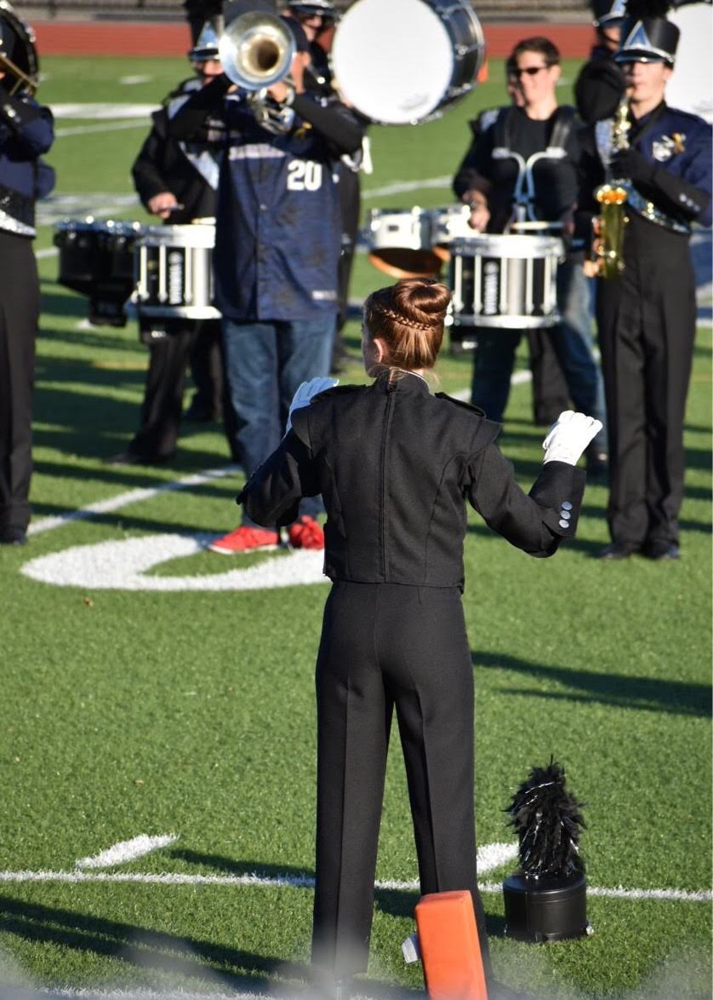

Madison Pierce - Bio
Bio

Hello, my name is Madison Pierce. Currently I am 18 years old, but I will be 19 on October 22. Halloween is by far my favorite holiday, and my favorite color is green. I am from Somerset, MA and I am super excited to start my college career at New England Insitute of Technology. One thing about me is that I love animals. I have two dogs: a great dane named Bruschi and a dachshund named Nellie. The newest addition is my baby bunny named Daisy. All of my pets have quite the personality and I love being around them. In high school I was pretty involved with music. I play trumpet, baritone, and euphonium, and was in many groups like marching band, jazz band, show choir pit band, etc. A little bit more about me is that I love to read, play video games, and having breakfast for dinner. Overall, I would say that I am neither outgoing or quiet, but somewhere in the middle.
I came to New England Tech because I love how interactive the program is. The fact that the program is so hands on makes, in my opinion, learning so much more fun and easier at the same time. I also like how the school is set up into quarters. I am not one for having too much of a break from school, because I always love learning and having something to do. I can not sit around all day. I am a person that has to be moving or else I get really antsy. Although this whole online thing is going to be tough, I am still excited to get involved in the program and meet new people.
Schooling

- North Smithfield Elementary School
- Hallowell Junior High
- Bellingham Elementary School
- Dighton Middles School
- Dighton Rehoboth Regional High School
- Somerset Berkley Regional High School
- New England Insitute of Technology
Hobbies
- Playing trumpet, baritone, or euphonium
- Playing Video Games
- Spending time with friends
- Being outside
- Painting or drawing